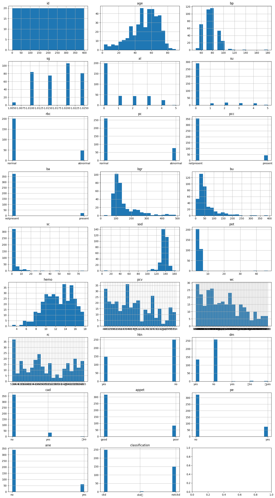
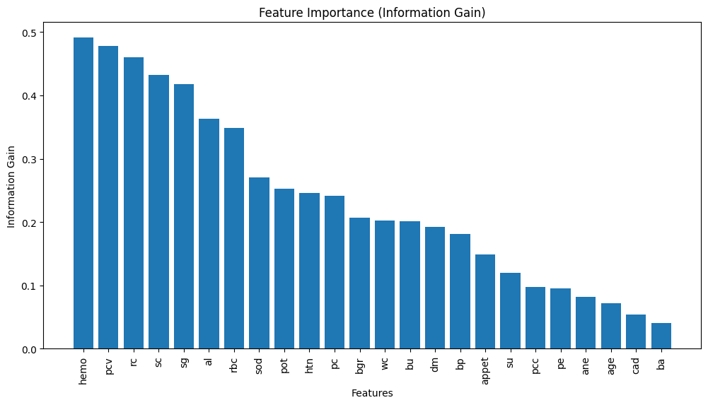
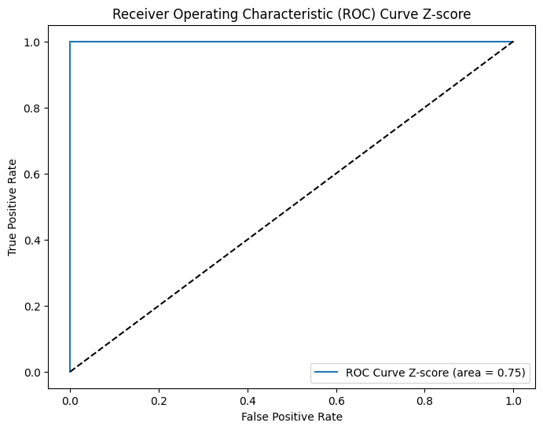

#Menyambungkan Google Drive dengan Google Colab
from google.colab import drive
drive.mount("/content/drive")
%cd /content/drive/MyDrive/PSD/Mounted at /content/drive
/content/drive/MyDrive/PSDMelakukan Klasifikasi penyakit ginjal kronis untuk memprediksi apakah seseorang terkena penyakit ginjal kronis atau tidak. Untuk menentukan prediksi penyakit ginjal kronis dapat dilihat pada kelas berikut:
Untuk menentukan klasifikasi penyakit ginjal kronis dapat dilihat dari ciri-ciri sebagai berikut:
Age (umur)
Blood Pressure (Tekanan Darah)
bp in mm/Hg
Specific Gravity (Berat jenis Urin)
sg - (1.005,1.010,1.015,1.020,1.025)
Albumin (Kadar albumin dalam urin)
al - (0,1,2,3,4,5)
Sugar (Kadar gula dalam urin)
su - (0,1,2,3,4,5)
Red Blood Cells (sel darah merah)
rbc - (normal,abnormal)
Pus Cell (sel darah putih)
pc - (normal,abnormal)
Pus Cell clumps (gumpalan sel darah putih)
pcc - (present,notpresent)
Bacteria (bakteri dalam urin)
ba - (present,notpresent)
Blood Glucose Random (kadar glukosa darah)
bgr in mgs/dl
Blood Urea (kadar urea dalam darah)
bu in mgs/dl
Serum Creatinine (kadar kreatin dalam darah)
sc in mgs/dl
Sodium (kadar natrium dalam darah)
sod in mEq/L
Potassium (kadar kalium dalam darah)
pot in mEq/L
Hemoglobin (kadar hemoglobin)
hemo in gms
Packed Cell Volume (volume sel darah merah dalam darah)
White Blood Cell Count (jumlah sel darah putih)
wc in cells/cumm
Red Blood Cell Count (jumlah sel darah merah)
rc in millions/cmm
Hypertension (hipertensi)
htn - (yes,no)
Diabetes Mellitus(keberadaan diabetes melitus)
dm - (yes,no)
Coronary Artery Disease (keberadaan penyakit arteri koroner)
cad - (yes,no)
Appetite (kondisi nafsu makan)
appet - (good,poor)
Pedal Edema (keberadaan edema pada kaki)
pe - (yes,no)
Anemia (keberadaan anemia)
ane - (yes,no)
Untuk refrensi bisa diakses link berikut : https://archive.ics.uci.edu/dataset/336/chronic+kidney+disease
Tujuan dari data understanding ini adalah untuk memahami struktur, karakteristik, dan kualitas data yang akan digunakan untuk analisis lebih lanjut.
Adapun hal - hal yang perlu dilakukan data understanding sebagai berikut : 1. Pengumpulan Data 2. Eksplorasi Data - Mengidentifikasi jumlah data - Mendeskripsikan setiap fitur pada data * tipe data * deskripsi data - Visualisasi data 3. Mengidentifikasi missing values setiap fitur atau kolom 4. Mengidentifikasi outlier
Data ini diambil selama periode 2 bulan di India dengan 25 fitur (misalnya jumlah sel darah merah, jumlah sel darah putih, dll). Targetnya adalah ‘klasifikasi’, yaitu ‘ckd’ atau ‘notckd’ - ckd = penyakit ginjal kronis. Penyakit Ginjal Kronis adalah suatu kondisi di mana fungsi ginjal secara bertahap menurun selama periode waktu yang cukup lama. Ginjal memiliki peran penting dalam menyaring limbah dan kelebihan cairan dari darah, serta dalam menjaga keseimbangan elektrolit dan tekanan darah.
Eksplorasi data awal adalah tahap awal dalam proses analisis data yang bertujuan untuk memahami sifat dan karakteristik data sebelum dilakukan analisis lebih lanjut. Langkah-langkah eksplorasi data awal memberikan wawasan awal tentang isi dataset dan membantu peneliti atau analis data dalam merencanakan pendekatan analisis yang tepat.
Mengidentifikasi jumlah data
Mengidentifikasi jumlah data merupakan langkah awal untuk memahami skala dataset yang akan kita lakukan pengolahan. Dengan mengetahui jumlah baris (observasi) dan kolom (fitur) atau gambaran umum tentang ukuran data.
Jumlah Dataset sebanyak 400 dengan rincian sebagai berikut :
#Menyambungkan Google Drive dengan Google Colab
from google.colab import drive
drive.mount("/content/drive")
%cd /content/drive/MyDrive/PSD/Mounted at /content/drive
/content/drive/MyDrive/PSDimport pandas as pd
df = pd.read_csv('kidney_disease.csv')
df.head(5)| id | age | bp | sg | al | su | rbc | pc | pcc | ba | ... | pcv | wc | rc | htn | dm | cad | appet | pe | ane | classification | |
|---|---|---|---|---|---|---|---|---|---|---|---|---|---|---|---|---|---|---|---|---|---|
| 0 | 0 | 48.0 | 80.0 | 1.020 | 1.0 | 0.0 | NaN | normal | notpresent | notpresent | ... | 44 | 7800 | 5.2 | yes | yes | no | good | no | no | ckd |
| 1 | 1 | 7.0 | 50.0 | 1.020 | 4.0 | 0.0 | NaN | normal | notpresent | notpresent | ... | 38 | 6000 | NaN | no | no | no | good | no | no | ckd |
| 2 | 2 | 62.0 | 80.0 | 1.010 | 2.0 | 3.0 | normal | normal | notpresent | notpresent | ... | 31 | 7500 | NaN | no | yes | no | poor | no | yes | ckd |
| 3 | 3 | 48.0 | 70.0 | 1.005 | 4.0 | 0.0 | normal | abnormal | present | notpresent | ... | 32 | 6700 | 3.9 | yes | no | no | poor | yes | yes | ckd |
| 4 | 4 | 51.0 | 80.0 | 1.010 | 2.0 | 0.0 | normal | normal | notpresent | notpresent | ... | 35 | 7300 | 4.6 | no | no | no | good | no | no | ckd |
5 rows × 26 columns
# Rincian dataset (banyak data dan kolom)
print("Banyaknya data : ", df.shape[0])
print("Banyaknya kolom : ", df.shape[1])Banyaknya data : 400
Banyaknya kolom : 26IdenItifikasi Proporsi Jumlah Masing-masing Kelas Dalam Data
Untuk mencapai hasil maksimal, perlu dilakukan identifikasi proporsi jumlah data dari masing-masing kelas. Dengan begitu ketidakseimbangan data disetiap kelas pada data penyakit ginjal kronis ini dapat ditangani dengan menyeimbangkan jumlah data disetiap kelasnya.
# Menghitung jumlah target pada data tanpa outlier
target = df['classification'].value_counts()
print("Jumlah data pada tiap target :")
print(target)Jumlah data pada tiap target :
ckd 248
notckd 150
ckd\t 2
Name: classification, dtype: int64Diperoleh identifikasi setiap target sebanyak 2 kelas yaitu ckd dan notckd. Kelas ckd memiliki jumlah yang lebih besar dibandingkan dengan notckd. Akan tetapi selisih dari jumlah data tersebut tidak terlalu jauh, sehingga tidak perlu dilakukan balancing data.
Mendeskripsikan setiap fitur
Chronic Kidney Disease / Penyakit Ginjal Kronis pada dataset ini terdapat 25 fitur dengan jumlah data sebanyak 400.
df.columnsIndex(['id', 'age', 'bp', 'sg', 'al', 'su', 'rbc', 'pc', 'pcc', 'ba', 'bgr',
'bu', 'sc', 'sod', 'pot', 'hemo', 'pcv', 'wc', 'rc', 'htn', 'dm', 'cad',
'appet', 'pe', 'ane', 'classification'],
dtype='object')Berikut Macam - Macam Data yang ada pada data ini.
Age (umur)
umur dalam tahun Data diperoleh dari usia seseorang saat pengambilan data
Blood Pressure (Tekanan Darah)
bp in mm/Hg
Peningkatan tekanan darah menjadi indikator atau faktor resiko dari penyakit ginjal kronis. Tekanan darah dapat diukur dengan menggunakan alat pengukur pengukur tekanan darah yaitu sphygmomanometer. Pengukurannya ada 2 cara yaiut :tekanan sistolik (saat jantung berkontraksi) dan tekanan diastolik (saat jantung beristirahat). Keduanya diukur dalam milimeter air raksa (mmHg).
Specific Gravity (Berat jenis Urin)
sg - (1.005,1.010,1.015,1.020,1.025)
Berat jenis urin mengukur seberapa padat atau encer urin seseorang. Normalnya, urin yang diproduksi oleh ginjal memiliki berat jenis tertentu yang mencerminkan kemampuan ginjal untuk menyaring zat-zat dalam darah dan membuangnya melalui urin. Pada orang dengan PGK, ginjal mungkin mengalami kesulitan menyaring dan membuang zat-zat tertentu, sehingga dapat terjadi perubahan pada berat jenis urin. Pengambilan data berat jenis urin dapat dilakukan dengan tiga cara yaitu Urinometer, Strip Uji Urin, dan Laboratorium. Untuk berat jenis urin normal berkisar antara 1.010 hingga 1.025. Akan tetapi, terdapat beberapa faktor yang mempengaruhi berat jenis urine normal, salah satunya pada kondisi medis seperti gagal ginjal, infeksi saluran kemih, dan diabetes dapat memiliki berat jenis urine dengan rentang 1.020 hingga 1.030 g/ml.
Referensi : https://jenis.id/berat-jenis-urine-normal/
Albumin (Kadar albumin dalam urin)
al - (0,1,2,3,4,5)
Albumin adalah salah satu protein dalam darah yang berperan penting dalam mempertahankan tekanan osmotik darah, serta membantu dalam transportasi zat-zat seperti hormon dan nutrisi. Albumin juga dapat diukur dalam urin, dan tingkat albumin dalam urin sering digunakan sebagai indikator dalam klasifikasi penyakit ginjal kronis (PGK). Pengambilan data albumin dapat dilakukan dengan dua cara yaitu Uji Tinja (Dipstick Test) dan Uji Laboratorium. Untuk penjelasan rentang albumin 0,1,2,3,4,5 sebagai berikut:
0: Tidak ada atau kadar albumin sangat rendah, yang mungkin dianggap normal
1: Tingkat mikroalbuminuria yang rendah, mungkin menunjukkan adanya kerusakan ginjal yang awal.
2: Peningkatan tingkat mikroalbuminuria, menunjukkan adanya kerusakan ginjal yang sedang.
3-4: Mungkin menunjukkan peningkatan yang lebih signifikan dalam tingkat albuminuria, mencerminkan kerusakan ginjal yang lebih parah.
5: Paling mungkin menunjukkan tingkat albuminuria yang sangat tinggi, mungkin dianggap sebagai makroalbuminuria, yang sering kali dihubungkan dengan progresi penyakit ginjal yang signifikan.
Sugar (Kadar gula dalam urin)
su - (0,1,2,3,4,5)
Kadar glukosa dalam darah dapat memberikan indikasi tentang fungsi ginjal dan kesehatan tubuh secara keseluruhan. Penyakit ginjal kronis bisa memengaruhi metabolisme glukosa dan menyebabkan peningkatan kadar gula dalam darah, yang dapat terlihat dalam urin. Pengambilan data albumin dapat dilakukan dengan cara Uji Pendektesian Gula. Untuk alat yang digunakan yaitu mikroskop atau alat tes kimia. Untuk penjelasan rentang albumin 0,1,2,3,4,5 sebagai berikut:
0: Kadar gula dalam urin yang diukur sebagai 0 mungkin menunjukkan bahwa tidak ada atau hanya sedikit glukosa yang terdeteksi dalam urin. Dalam keadaan normal, urin seharusnya tidak mengandung glukosa yang signifikan.
1: Kadar gula dalam urin sebesar 1 mungkin menunjukkan adanya sedikit glukosa dalam urin. Meskipun nilai ini masih di bawah ambang batas normal, bisa menjadi perhatian dan memerlukan pemantauan lebih lanjut.
2: Kadar gula dalam urin sebesar 2 mungkin menunjukkan peningkatan glukosa yang lebih signifikan dalam urin. Ini bisa mengindikasikan adanya gangguan metabolisme glukosa atau ketidaknormalan pada ginjal.
3-4: Kadar gula dalam urin sebesar 3 atau 4 mungkin menunjukkan peningkatan yang lebih signifikan dalam glukosa urin. Ini bisa terkait dengan masalah metabolik yang lebih serius dan perlu ditinjau lebih lanjut oleh profesional medis.
5: Kadar gula dalam urin sebesar 5 mungkin menunjukkan tingkat glukosa yang sangat tinggi dalam urin. Ini bisa merupakan tanda gangguan metabolisme glukosa yang serius atau masalah ginjal yang signifikan.
Red Blood Cells (sel darah merah)
rbc - (normal,abnormal)
Sel darah merah (eritrosit) adalah komponen seluler darah yang membawa oksigen dari paru-paru ke seluruh tubuh dan mengangkut karbon dioksida dari seluruh tubuh kembali ke paru-paru untuk dikeluarkan. Kaitannya dengan penyakit ginjal kronis adalah penyakit ini dapat menyebabkan anemia (kurang darah) karena produksi hormon eritropoietin berkurang, ini diperlukan untuk merangsang pembentukan sel darah merah di dalam sumsum tulang. Pengambilan data sel darah merah dapat dilakukan dengan 3 cara yaitu, Hitung Sel Darah Merah(RBC Count), Hemoglobin (Hb) dan Hematokrit (Hct), dan Indeks Sel Darah Merah (MCV, MCH, MCHC). Untuk penjelasan sel darah merah dikatakan normal dan abnormal sebagai berikut :
normal : Jumlah sel darah merah, kadar hemoglobin, dan parameter terkait dalam rentang normal menunjukkan fungsi normal sel darah merah. Tidak adanya anemia atau gangguan produksi sel darah merah.
abnormal : Pengurangan jumlah sel darah merah, kadar hemoglobin, atau perubahan pada indeks sel darah merah bisa menjadi indikasi adanya anemia yang dapat terkait dengan PGK.
Pus Cell (sel darah putih)
pc - (normal,abnormal)
Sel darah putih (leukosit) adalah sel-sel yang berperan dalam sistem kekebalan tubuh. Penyakit ginjal kronis (PGK) dapat mempengaruhi sistem kekebalan tubuh, dan perubahan pada jumlah sel darah putih dapat menjadi fitur yang diobservasi dalam klasifikasi PGK. Peningkatan jumlah sel darah putih dapat mencerminkan respon kekebalan tubuh terhadap peradangan atau infeksi yang terkait dengan PGK. Pengambilan data sel darah putih dapat dilakukan dengan 2 cara yaitu Tes Darah Rutin (Complete Blood Count/CBC) dan Darah Urin. Untuk penjelasan sel darah putih dikatakan normal dan abnormal sebagai berikut :
normal : Jumlah sel darah putih dalam darah biasanya berada dalam rentang normal yaitu berkisar antara 4,500−10.000 sel/mm³.
abnormal : Terjadinya kekurangan atau kelebihan sel darah putih, untuk kekurangan sel darah merah yaitu sekitar 4.000 sel/mm³. Dan untuk kelebihan sel darah putih yaitu lebih dari angka 11.000 sel/mm³.
Pus Cell clumps (gumpalan sel darah putih)
pcc - (present,notpresent)
Pus Cell Clumps (klompok sel darah putih) dalam urin dapat menunjukkan adanya peradangan atau infeksi dalam sistem kemih, termasuk pada ginjal, yang dapat terkait dengan penyakit ginjal kronis (PGK). Pengambilan data sel darah putih dapat dilakukan dengan 2 cara yaitu Uji Urin Mikroskopis dan Strip Uji Urin. Untuk penjelasan Pus Cell clumps dikatakan present dan not present sebagai berikut :
present : adanya peradangan atau infeksi dalam sistem kemih pada saat pemeriksaan urin.
not present : tidak adanya peradangan atau infeksi dalam sistem kemih pada saat pemeriksaan urin.
Bacteria (bakteri dalam urin)
ba - (present,notpresent)
Bakteri dalam urin dapat menunjukkan adanya infeksi saluran kemih, yang bisa terkait dengan kondisi ginjal atau sistem kemih yang mendasari. Pengambilan data sel darah putih dapat dilakukan dengan cara uji laboratorium pada sampel urin menggunakan alat mikroskop atau alat tes kimia. Untuk penjelasan bacteria dikatakan present dan not present sebagai berikut :
present : adanya keberadaan bakteri dalam sistem kemih pada saat pemeriksaan urin.
not present : tidak adanya keberadaan bakteri dalam sistem kemih pada saat pemeriksaan urin.
Blood Glucose Random (kadar glukosa darah)
bgr in mgs/dl
Glukosuria adalah kondisi terdapatnya ekskresi glukosa di dalam urine yang mengacu pada kondisi patologis seperti diabetes mellitus atau gangguan fungsi ginjal. Adanya ekskresi glukosa di dalam urine dapat terjadi pada keadaan dengan kadar glukosa plasma yang normal maupun kadar glukosa plasma yang tinggi. Diagnosis glukosuria dapat ditegakkan melalui pemeriksaan urinalisis. Bila pada pemeriksaan ditemukan kadar glukosa di atas 25 mg/dl pada urine segar acak (random fresh urine), maka pasien dapat dikatakan mengalami glukosuria.
Blood Urea (kadar urea dalam darah)
bu in mgs/dl
Kadar ureum tinggi bisa menandakan bahwa ginjal Anda tidak berfungsi dengan baik. Idealnya, ginjal berfungsi menyaring dan membuang ureum dari darah melalui urine. Jika menumpuk di darah, ureum dapat menimbulkan beragam keluhan dan gangguan kesehatan. Ureum merupakan zat sisa dari pemecahan protein dan asam amino di dalam hati. Kadar ureum dapat diukur melalui tes blood urea nitrogen (BUN). Zat ini bersifat racun dan perlu segera dikeluarkan dari tubuh melalui ginjal. Batas normal kadar ureum berdasarkan usia dan jenis kelamin sebagai berikut :
Serum Creatinine (kadar kreatin dalam darah)
sc in mgs/dl
Kreatinin adalah zat limbah dalam darah yang diproduksi oleh jaringan otot saat Anda bergerak atau beraktivitas. Jumlah kreatinin di dalam darah diatur oleh ginjal. Itulah alasan mengapa pemeriksaan kadar kreatinin sering dilakukan sebagai salah satu cara untuk menilai fungsi ginjal.Normalnya, kreatinin dalam darah akan disaring oleh ginjal, lalu dibuang keluar melalui urine. Ketika ginjal bermasalah atau fungsinya terganggu, kreatinin tidak dapat disaring dengan baik. Hal ini dapat menyebabkan kadar kreatinin dalam darah meningkat dan dan menyebabkan fungsi ginjal terganggu.Kadar kreatinin normal dalam darah pada orang dewasa adalah 0,8–1,2 mg/dL. Namun, rentang nilai tersebut mungkin saja bervariasi pada setiap laboratorium.
Sodium (kadar natrium dalam darah)
sod in mEq/L
Sodium adalah elektrolit yang sangat penting dalam tubuh dan memiliki peran dalam menjaga keseimbangan cairan, tekanan darah, dan fungsi saraf dan otot. Dalam konteks penyakit ginjal kronis (PGK), kadar sodium dalam tubuh dapat berubah akibat gangguan fungsi ginjal dan keseimbangan elektrolit yang terkait. Pengambilan data sel darah putih dapat dilakukan dengan 3 cara yaitu, Tes Elektrolit, Tes Fungsi Ginjal, dan Pemeriksaan Urine. Standar kebutuhan sodium seseorang dewasa berklisar antara 1500-2300 mg sodium.
Potassium (kadar kalium dalam darah)
pot in mEq/L
Kalium atau potasium adalah mineral yang membantu tubuh menyeimbangkan cairan dan mendukung fungsi sel, saraf, dan otot. Senyawa ini ditemukan dalam berbagai tingkat di banyak makanan, terutama buah-buahan dan sayuran. Penting untuk memiliki keseimbangan kalium yang tepat dalam darah, dan kadar umumnya harus tetap antara 3,5 dan 5,0 milliequivalent per liter (mEq/L).
Hemoglobin (kadar hemoglobin)
hemo in gms
Hemoglobin adalah protein dalam sel darah merah yang berperan penting dalam mengangkut oksigen dari paru-paru ke seluruh tubuh dan membawa karbon dioksida kembali ke paru-paru untuk dikeluarkan. Pengambilan data sel darah putih dapat dilakukan dengan 2 cara yaitu Tes Darah Rutin(Complete Blood Count/CBC) dan Uji Hematokrit. Kadar hemoglobin normal pada wanita dewasa berkisar antara 12–15 g/dL, sedangkan kadar hemoglobin pada pria dewasa berkisar antara 13–17 g/dL.
Packed Cell Volume (volume sel darah merah dalam darah)
Packed Cell Volume (PCV), juga dikenal sebagai Hematocrit, adalah ukuran persentase volume darah yang terdiri dari sel-sel darah merah. Meskipun PCV umumnya bukan fitur utama dalam klasifikasi penyakit ginjal kronis (PGK), perubahan dalam PCV dapat memberikan indikasi tentang kondisi kesehatan secara keseluruhan, termasuk kemungkinan dampak PGK terhadap produksi sel darah merah. Pengambilan data sel darah putih dapat dilakukan dengan 3 cara yaitu, Pengambilan Sampel Darah, Sentrifugasi, dan Pengukuran PCV. Rentang nilai normal PCV dapat bervariasi tergantung pada usia, jenis kelamin, dan faktor lainnya. Sebagai contoh, nilai normal PCV pada orang dewasa pria biasanya berkisar antara 38% hingga 52%, sementara pada wanita berkisar antara 33% hingga 47%.
White Blood Cell Count (jumlah sel darah putih)
wc in cells/cumm
Jumlah sel darah putih (leukosit) dalam darah memberikan informasi tentang respons sistem kekebalan tubuh terhadap infeksi atau peradangan yang dapat terkait dengan PGK. Pengambilan data sel darah putih dapat dilakukan dengan cara Tes Darah Rutin (Complete Blood Count/CBC). Jumlah sel darah putih yang normal adalah sekitar 5.000 – 10.000/cumm.
Red Blood Cell Count (jumlah sel darah merah)
rc in millions/cmm
Red Blood Cell Count (RBC count) adalah pengukuran jumlah sel darah merah dalam satu volume tertentu dari darah. Pengukuran RBC count dapat memberikan informasi penting tentang kondisi kesehatan, termasuk kemungkinan adanya masalah ginjal. Dalam konteks penyakit ginjal kronis (PGK), perubahan pada RBC count dapat mencerminkan gangguan fungsi ginjal atau kondisi medis terkait. Pengambilan data sel darah merah dapat dilakukan dengan cara Tes Darah Rutin (Complete Blood Count/CBC). Jumlah sel darah merah normal berdasarkan rentang umur dan jenis kelamin sebagai berikut :
Hypertension (hipertensi)
htn - (yes,no)
Hipertensi atau tekanan darah tinggi adalah salah satu faktor risiko utama untuk perkembangan penyakit ginjal kronis (PGK). Kondisi ini dapat merusak pembuluh darah di ginjal dan menyebabkan kerusakan ginjal secara bertahap. Oleh karena itu, hipertensi sering diidentifikasi sebagai fitur atau faktor dalam klasifikasi penyakit ginjal kronis. Pengambilan data hipertensi dapat dilakukan dengan 3 cara yaitu, Pengukuran Tekanan Darah, Minoritas Tekanan Darah Berkala, dan Rekam Medis. Untuk penjelasan hipertensi dikatakan yes dan no sebagai berikut :
yes : Jika tekanan darah pasien consistently (secara konsisten) berada di atas ambang batas normal (umumnya diukur sebagai 130/80 mmHg atau lebih tinggi), ini dapat dianggap sebagai indikasi hipertensi.
no : Jika tekanan darah pasien consistently (secara konsisten) berada di dibawah ambang batas normal (kurang dari 130/80 mmHg), ini dapat dianggap sebagai tidak terindikasi hipertensi.
Diabetes Mellitus(keberadaan diabetes melitus)
dm - (yes,no)
Diabetes adalah penyakit kronis yang ditandai dengan tingginya kadar gula darah. Glukosa merupakan sumber energi utama bagi sel tubuh manusia. Akan tetapi, pada penderita diabetes, glukosa tersebut tidak dapat digunakan oleh tubuh. Pengambilan data hipertensi dapat dilakukan dengan 2 cara yaitu, Tes Glukosa Darah dan Riwayat Kesehatan. Untuk penjelasan Diabetes Melitus dikatakan yes dan no sebagai berikut :
yes : jika seseorang memiliki riwayat Diabetes Mellitus, hasil tes glukosa darah atau HbA1c yang positif, atau sedang menjalani pengobatan untuk diabetes mellitus, maka dapat dikategorikan sebagai “Yes” untuk diabetes mellitus.
no : Jika seseorang tidak memiliki riwayat diabetes mellitus, hasil tes glukosa darah dalam kisaran normal, dan tidak sedang menjalani pengobatan untuk diabetes mellitus, maka dapat dikategorikan sebagai “No” untuk diabetes mellitus.
Coronary Artery Disease (keberadaan penyakit arteri koroner)
cad - (yes,no)
Coronary Artery Disease (CAD) atau penyakit arteri koroner adalah suatu kondisi dimana pembuluh darah koroner yang memasok darah ke jantung mengalami penyempitan atau pemblokiran. Meskipun secara langsung tidak termasuk dalam klasifikasi penyakit ginjal kronis (PGK), tetapi PGK dan CAD seringkali saling terkait dan memiliki faktor risiko bersama seperti diabetes, hipertensi, dan gangguan metabolisme lipid. Pengambilan data Coronary Artery Disease dapat dilakukan dengan melalui Riwayat Medis. Untuk penjelasan Coronary Artery Disease dikatakan yes dan no sebagai berikut :
yes : Jika data menunjukkan adanya CAD, ini berarti bahwa pasien memiliki kondisi penyakit arteri koroner yang perlu dievaluasi dan dielola secara khusus.
no : Jika data menunjukkan tidak adanya CAD, ini berarti bahwa pasien tidak memiliki penyakit arteri koroner berdasarkan informasi yang diperoleh.
Appetite (kondisi nafsu makan)
appet - (good,poor)
Nafsu makan (appetite) dapat dipengaruhi oleh penyakit ginjal kronis (PGK) dan memiliki dampak yang signifikan pada kesehatan pasien, salah satunya dampaknya yaitu penurunan nafsu makan. Pengambilan data Appetite dapat dilakukan dengan 3 cara yaitu Pengamatan klinis, Wawancara Pasien, dan Penggunaan Kuesioner. Untuk penjelasan appetite dikatakan good dan poor sebagai berikut :
good : Pasien dengan nafsu makan yang baik, pola makan yang memadai, dan pertahankan berat badan yang normal mungkin memiliki status nutrisi yang baik. Ini dapat menunjukkan bahwa PGK mereka mungkin masih dalam tahap awal atau lebih terkontrol.
poor : Pasien dengan penurunan nafsu makan, kehilangan berat badan yang signifikan, atau masalah nutrisi lainnya mungkin mengalami dampak lebih serius dari PGK. Kondisi ini dapat disebabkan oleh beberapa faktor, termasuk komplikasi PGK, efek samping dari pengobatan, atau penyakit lain yang terkait.
Pedal Edema (keberadaan edema pada kaki)
pe - (yes,no)
Pedal edema merupakan suatu kondisi di mana terjadi penumpukan cairan di daerah pergelangan kaki atau bagian bawah tungkai. Edema seringkali menjadi gejala yang terkait dengan penyakit ginjal kronis (PGK) karena ginjal yang tidak berfungsi dengan baik mungkin gagal menyaring dan mengeluarkan cairan yang cukup dari tubuh. Pengambilan data Pedal edema dapat dilakukan dengan cara Pemeriksaan fisik. Untuk penjelasan Pedal Edma dikatakan yes dan no sebagai berikut :
yes : Pedal edema terlihat atau terkonfirmasi melalui pemeriksaan fisik atau catatan pasien. Pembengkakan yang terlihat di daerah pergelangan kaki atau kaki dapat dianggap sebagai tanda pedal edema yang positif.
no :Tidak ada tanda atau gejala edema yang terdeteksi pada pemeriksaan fisik atau melalui informasi yang diberikan oleh pasien. Pembengkakan tidak terjadi atau tidak dapat diidentifikasi.
Anemia (keberadaan anemia)
ane - (yes,no)
Anemia, atau kekurangan sel darah merah atau hemoglobin dalam darah, dapat terjadi pada penyakit ginjal kronis (PGK). Ginjal memiliki peran penting dalam pembentukan eritropoietin, hormon yang merangsang produksi sel darah merah dalam sumsum tulang. Gangguan pada ginjal dapat menyebabkan penurunan produksi eritropoietin dan berkontribusi pada perkembangan anemia pada pasien dengan PGK. Pengambilan data Anemia dapat dilakukan dengan cara 2 cara yaitu Tes Hemoglobin dan Hitung Jumlah Sel Darah Merah (RBC). Untuk penjelasan Anemia dikatakan yes dan no sebagai berikut :
yes : jika hasil tes menunjukkan kadar hemoglobin yang rendah, hitung sel darah merah yang rendah, atau kadar zat besi yang rendah, ini dapat mengindikasikan adanya anemia yang terkait dengan penyakit ginjal kronis.
no : Jika hasil tes menunjukkan kadar hemoglobin, hitung sel darah merah, dan kadar zat besi dalam kisaran normal, maka pasien mungkin tidak mengalami anemia yang terkait dengan PGK.
Class (klasifikasi penyakit ginjal kronis)
class - (ckd,notckd)
Data bisa diperoleh dari diagnosis medis atau hasil tes medis yang relevan.
Visualisasi Data
import matplotlib.pyplot as plt
# df adalah DataFrame Anda
# Ganti dengan data sesuai kebutuhan Anda
# Menentukan jumlah kolom yang ingin ditampilkan
num_cols = min(26, len(df.columns)) # Maksimal menampilkan 25 kolom
# Menentukan jumlah baris dan kolom untuk tata letak subplot
num_rows = (num_cols // 3) + int(num_cols % 3 != 0)
# Menentukan ukuran gambar
fig, axes = plt.subplots(num_rows, 3, figsize=(15, num_rows * 3))
# Melakukan loop untuk membuat histogram untuk setiap kolom
for i in range(num_rows):
for j in range(3):
col_index = i * 3 + j
if col_index < num_cols:
df[df.columns[col_index]].hist(ax=axes[i, j], bins=20)
axes[i, j].set_title(df.columns[col_index])
# Menyesuaikan tata letak
plt.tight_layout()
plt.show()UserWarning: Glyph 9 ( ) missing from current font.
plt.tight_layout()
/usr/local/lib/python3.10/dist-packages/IPython/core/pylabtools.py:151: UserWarning: Glyph 9 ( ) missing from current font.
fig.canvas.print_figure(bytes_io, **kw)
Missing value, atau nilai yang hilang, merujuk pada keadaan di mana suatu variabel dalam data tidak memiliki nilai atau informasi yang tersedia. Keberadaan missing value dapat disebabkan oleh berbagai faktor, seperti kesalahan pengukuran, kelalaian dalam pengumpulan data, atau sengaja diabaikan. Dalam analisis data, penanganan yang tepat terhadap missing value penting karena dapat memengaruhi keakuratan dan interpretasi hasil analisis. Metode penanganan missing value melibatkan strategi seperti penghapusan data yang hilang, imputasi nilai (pengisian nilai yang hilang), atau teknik lain yang sesuai dengan karakteristik data dan tujuan analisis.
# Menghitung apakah ada nilai yang hilang dalam setiap kolom
missing_values = df.isna().any()
# Menampilkan hasil
print("Apakah ada nilai yang hilang dalam setiap kolom:")
print(missing_values)Apakah ada nilai yang hilang dalam setiap kolom:
id False
age True
bp True
sg True
al True
su True
rbc True
pc True
pcc True
ba True
bgr True
bu True
sc True
sod True
pot True
hemo True
pcv True
wc True
rc True
htn True
dm True
cad True
appet True
pe True
ane True
classification False
dtype: boolNoted : Terdapat missing value pada data
Jumlah missing value pada tiap data
missing_values = df.isnull().sum()
print("Jumlah Missing Values dalam Setiap Kolom:")
print(missing_values)Jumlah Missing Values dalam Setiap Kolom:
id 0
age 9
bp 12
sg 47
al 46
su 49
rbc 152
pc 65
pcc 4
ba 4
bgr 44
bu 19
sc 17
sod 87
pot 88
hemo 52
pcv 70
wc 105
rc 130
htn 2
dm 2
cad 2
appet 1
pe 1
ane 1
classification 0
dtype: int64Terdapat banyak sekali missing value hampir di semua fitur. Untuk mengatasi hal tersebut perlu dilakukan pengisian data terhadap missing value dengan menggunakan mean atau rata-rata
Duplikat data merujuk pada keberadaan entri atau baris data yang identik atau serupa dalam dataset. Duplikasi data bisa terjadi karena beberapa sebab, seperti kesalahan input, duplikasi data saat penggabungan dataset, atau kesalahan dalam proses pengumpulan data. Identifikasi dan penanganan duplikat data penting dalam analisis data karena bisa memengaruhi hasil secara tidak akurat, serta dapat memengaruhi kebijakan atau keputusan yang diambil berdasarkan data tersebut. Proses penanganan duplikat dapat melibatkan penghapusan baris yang sama atau mengkonsolidasikan informasi dari entri yang duplikat.
jumlah_duplikat = df.duplicated().sum()
# Menampilkan jumlah data yang duplikat
print("Jumlah data yang duplikat:", jumlah_duplikat)Jumlah data yang duplikat: 0Noted : tidak terdapat beberapa baris data yang sama, sehingga data tersebut tidak perlu dihilangkan untuk menghindari adanya data yang redundan
Identifikasi karakter khusus adalah proses mengenali dan memahami keberadaan karakter yang tidak umum atau khusus dalam suatu dataset. Karakter khusus dapat termasuk simbol-simbol tertentu, spasi yang tidak terlihat, atau karakter lain yang tidak sesuai dengan format atau tipe data yang diharapkan.
import pandas as pd
# Loop melalui setiap kolom dan cek nilai unik untuk mendeteksi karakter khusus
for column in df.columns:
unique_values = df[column].unique()
# Tampilkan nama kolom dan nilai unik yang mengandung karakter khusus
for value in unique_values:
if isinstance(value, str) and (any(not c.isalnum() and not c.isspace() for c in value) or '\t' in value):
print(f"Kolom '{column}': Karakter khusus terdeteksi - '{value}'")Kolom 'pcv': Karakter khusus terdeteksi - ' ?'
Kolom 'pcv': Karakter khusus terdeteksi - ' 43'
Kolom 'wc': Karakter khusus terdeteksi - ' 6200'
Kolom 'wc': Karakter khusus terdeteksi - ' 8400'
Kolom 'wc': Karakter khusus terdeteksi - ' ?'
Kolom 'rc': Karakter khusus terdeteksi - '5.2'
Kolom 'rc': Karakter khusus terdeteksi - '3.9'
Kolom 'rc': Karakter khusus terdeteksi - '4.6'
Kolom 'rc': Karakter khusus terdeteksi - '4.4'
Kolom 'rc': Karakter khusus terdeteksi - '4.0'
Kolom 'rc': Karakter khusus terdeteksi - '3.7'
Kolom 'rc': Karakter khusus terdeteksi - '3.8'
Kolom 'rc': Karakter khusus terdeteksi - '3.4'
Kolom 'rc': Karakter khusus terdeteksi - '2.6'
Kolom 'rc': Karakter khusus terdeteksi - '2.8'
Kolom 'rc': Karakter khusus terdeteksi - '4.3'
Kolom 'rc': Karakter khusus terdeteksi - '3.2'
Kolom 'rc': Karakter khusus terdeteksi - '3.6'
Kolom 'rc': Karakter khusus terdeteksi - '4.1'
Kolom 'rc': Karakter khusus terdeteksi - '4.9'
Kolom 'rc': Karakter khusus terdeteksi - '2.5'
Kolom 'rc': Karakter khusus terdeteksi - '4.2'
Kolom 'rc': Karakter khusus terdeteksi - '4.5'
Kolom 'rc': Karakter khusus terdeteksi - '3.1'
Kolom 'rc': Karakter khusus terdeteksi - '4.7'
Kolom 'rc': Karakter khusus terdeteksi - '3.5'
Kolom 'rc': Karakter khusus terdeteksi - '6.0'
Kolom 'rc': Karakter khusus terdeteksi - '5.0'
Kolom 'rc': Karakter khusus terdeteksi - '2.1'
Kolom 'rc': Karakter khusus terdeteksi - '5.6'
Kolom 'rc': Karakter khusus terdeteksi - '2.3'
Kolom 'rc': Karakter khusus terdeteksi - '2.9'
Kolom 'rc': Karakter khusus terdeteksi - '2.7'
Kolom 'rc': Karakter khusus terdeteksi - '8.0'
Kolom 'rc': Karakter khusus terdeteksi - '3.3'
Kolom 'rc': Karakter khusus terdeteksi - '3.0'
Kolom 'rc': Karakter khusus terdeteksi - '2.4'
Kolom 'rc': Karakter khusus terdeteksi - '4.8'
Kolom 'rc': Karakter khusus terdeteksi - ' ?'
Kolom 'rc': Karakter khusus terdeteksi - '5.4'
Kolom 'rc': Karakter khusus terdeteksi - '6.1'
Kolom 'rc': Karakter khusus terdeteksi - '6.2'
Kolom 'rc': Karakter khusus terdeteksi - '6.3'
Kolom 'rc': Karakter khusus terdeteksi - '5.1'
Kolom 'rc': Karakter khusus terdeteksi - '5.8'
Kolom 'rc': Karakter khusus terdeteksi - '5.5'
Kolom 'rc': Karakter khusus terdeteksi - '5.3'
Kolom 'rc': Karakter khusus terdeteksi - '6.4'
Kolom 'rc': Karakter khusus terdeteksi - '5.7'
Kolom 'rc': Karakter khusus terdeteksi - '5.9'
Kolom 'rc': Karakter khusus terdeteksi - '6.5'
Kolom 'dm': Karakter khusus terdeteksi - ' no'
Kolom 'dm': Karakter khusus terdeteksi - ' yes'
Kolom 'cad': Karakter khusus terdeteksi - ' no'
Kolom 'classification': Karakter khusus terdeteksi - 'ckd 'Noted : Diperoleh terdapat beberpa kolom yang memiliki karakter khusus tab (‘) pada kolom ’pcv’, ‘wc’, ‘rc’, ‘dm’, dan ‘cad’ dan juga terdapat kesalahan konversi tipe data pada kolom ‘rc’
Outlier Pada Data adalah nilai yang berbeda dari yang lain dimana perbedaannya sangat jauh dengan sekumpulan data yang lain dalam satu kolom.Keberadaan Outlier sendiri dinilai dapat mengganggu analisis statistik dan kesimpulan yang diambil dari data karena mereka bisa menyebabkan pergeseran rata-rata atau mengganggu distribusi data secara keseluruhan. Maka dari itu, pada data penyakit ginjal kronis ini perlu dilakukan identifikasi outlier pada data. Untuk menentukan outlier pada data dapat dengan menggunakan metode Local Outlier Factor.
LOCAL OUTLIER FACTOR
Adalah metode yang digunakan untuk mendeteksi outlier dalam data dengan memperhatikan konteks lokal dari setiap data poin. LOF menghitung seberapa “aneh” atau tidak biasa suatu poin data jika dibandingkan dengan tetangga-tetangganya. Poin yang memiliki LOF tinggi dibandingkan dengan tetangganya dapat dianggap sebagai outlier.
Adapun tahap-tahp untuk mengidentifikasi outlier pada data dengan menggunakan Local Outlier Factor :
Hitung Jarak Antar Data dimana jarak yang dihitung adalah jarak titik yang akan dievaluasi dengan semua titik didalam satu baris. Perhitungan Jarak dilakukan menggunakan perhitungan jarak euclidean. \[ \text{distance}(p, q) = \sqrt{\sum_{i=1}^{n}(p_i - q_i)^2} \] dimana : p = titik yang akan dievaluasi q = titik selain titik p
Hitung Kepadatan Lokal Setelah jarak diketahui, maka selanjutnya kepadatan lokal dari titik data tersebut perlu dihitung. Kepadatan lokal dapat dihitung dengan membandingkan jumlah titik-titik tetangga dalam jarak tertentu (radius) terhadap titik data yang sedang dievaluasi. \[ \text{Local Density}(p) = \frac{\text{jumlah tetangga dalam radius}}{\text{jumlah total data}} \]
Hitung Local Reachability Density(LRD) Hitung kepadatan jarak (reachability distance) dari titik data (p) terhadap tetangganya (q). Local Reachability Density dari titik p terhadap tetangga q dihitung sebagai rata-rata dari jarak antara q dan p terhadap tetangga q: \[ \text{reachdist}(p, q) = \max(\text{distance}(p, q), \text{radius}) \]
\[ \text{Local Reachability Density}(p) = \frac{1}{\text{jumlah tetangga}} \sum_{q \in N_{\text{radius}}(p)} \frac{\text{reachdist}(p, q)}{\text{density}(q)} \]
dimana: - N radius(p) adalah himpunan tetangga dalam radius tertentu radius dari titik p. - density(q) adalah kepadatan lokal dari tetangga q.
dimana : LOF yang tinggi menunjukkan bahwa titik tersebut memiliki kepadatan lokal yang lebih rendah dibandingkan dengan tetangganya, sehingga cenderung menjadi outlier.
Contoh Kasus, untuk mencari outlier pada data misalkan terdapat tabel seperti dibawah ini:
| X | Y |
|---|---|
| 1 | 4 |
| 2 | 3 |
| 3 | 8 |
| 7 | 2 |
| 5 | 9 |
| X | Y | Jarak |
|---|---|---|
| 1 | 4 | 1,41 ; 4,47 ; 4,47 |
| 2 | 3 | 1,41 ; 3,16 |
| 3 | 8 | 4,47 |
| 5 | 2 | 4,47 ; 3,16 ; 4,24 |
| 8 | 5 | 4,24 |
| X | Y | Jumlah Tetangga |
|---|---|---|
| 1 | 4 | 3 |
| 2 | 3 | 2 |
| 3 | 8 | 1 |
| 5 | 2 | 3 |
| 8 | 5 | 1 |
| X | Y | Jarak |
|---|---|---|
| 1 | 4 | (1,41 + 4,47 + 4,47) / 3 = 3,45 |
| 2 | 3 | (1,41 + 3,16) /2 = 2,285 |
| 3 | 8 | 4,47 |
| 5 | 2 | (4,47 + 3,16 + 4,24) / 3 = 3,95 |
| 8 | 5 | 4,24 |
| X | Y | LOF |
|---|---|---|
| 1 | 4 | (1/3,45) x ((2,285 + 4,47 + 3,95) / 3) = 1,03 |
| 2 | 3 | (1/2,285) x ((3,45 + 3,95) / 2) = 1,61 |
| 3 | 8 | (1/4,47) x ((3,45)) = 0,77 |
| 5 | 2 | (1/3,95) x ((3,45 + 2,285 + 4,24) / 3) = 0,83 |
| 8 | 5 | (1/4,24) x ((3,95)) = 0.936 |
Dengan begitu, nilai yang berkemungkinan menjadi outlier adalah baris 2 dan baris 1
Inter Pretasi Local Outlier Factor :
from sklearn.impute import SimpleImputer
from sklearn.preprocessing import StandardScaler
from sklearn.neighbors import LocalOutlierFactor
import numpy as np
import pandas as pd
# Membagi data menjadi numerik dan kategorikal
numerical_cols = df.select_dtypes(include=['int', 'float']).columns
categorical_cols = df.select_dtypes(include='object').columns
# Menggunakan SimpleImputer untuk mengisi nilai yang hilang dengan mean (dapat disesuaikan)
imputer = SimpleImputer(strategy='mean')
df[numerical_cols] = imputer.fit_transform(df[numerical_cols])
# Label Encoding untuk kolom kategorikal
from sklearn.preprocessing import LabelEncoder
label_encoder = LabelEncoder()
df[categorical_cols] = df[categorical_cols].apply(lambda col: label_encoder.fit_transform(col))
# Menggabungkan kolom numerik dan kategorikal
selected_data = df[numerical_cols.union(categorical_cols)]
# Normalisasi df numerik
scaler = StandardScaler()
selected_data[numerical_cols] = scaler.fit_transform(selected_data[numerical_cols])
# Membuat model LOF
clf = LocalOutlierFactor(n_neighbors=20) # Jumlah tetangga yang digunakan
outlier_scores = clf.fit_predict(selected_data)
# Menampilkan indeks outlier
outlier_indices = np.where(outlier_scores == -1)[0]
print("Indeks outlier:", outlier_indices)
print("Jumlah outlier:", len(outlier_indices))Indeks outlier: [ 21 61 65 66 73 88 106 141 148 175 197 214 230 235 249 255 295 302
349]
Jumlah outlier: 19Noted : Terdapat outlier berjumlah 19 outlier.
Kesimpulan : 1. Data memiliki missing values 2. Data tidak memiliki data redundan 3. Terdapat karakter khusus pada data dan kesalahan konversi tipe data 3. Data memiliki outlier berjumlah 19 4. Perbandingan proporsi data tiap target tidak terlalu jauh sehingga tidak perlu di seimbangkan menggunakan metode UnderSampling
Tahap preprocessing adalah tahapan untuk mempersiapkan data sebelum dilakukan pembuatan model. Pada tahap preprocessing, data akan dibersihkan, diubah, dan disesuaikan agar data sesuai dengan kebutuhan pada model machine learning yang akan digunakan. Tahap preprocessing merupakan langkah-langkah untuk membersihkan dan menyiapkan data sebelum memasukkan ke dalam model.
Setelah memahami data, akan dilakukan tahap preprocessing untuk menangani masalah pada data yang sudah didefinisikan pada Data Understanding, yakni. 1. Menghapus karakter khusus dan mengubah kesalahan konversi tipe data 2. Mengisi data missing value 3. menghapus Outlier
Setelah data siap, akan dilakukan : 1. Skoring tiap fitur kembali 2. Normalisasi Data 3. Eksplorasi Model
import pandas as pd
df = pd.read_csv('kidney_disease.csv')
df.head(5)| id | age | bp | sg | al | su | rbc | pc | pcc | ba | ... | pcv | wc | rc | htn | dm | cad | appet | pe | ane | classification | |
|---|---|---|---|---|---|---|---|---|---|---|---|---|---|---|---|---|---|---|---|---|---|
| 0 | 0 | 48.0 | 80.0 | 1.020 | 1.0 | 0.0 | NaN | normal | notpresent | notpresent | ... | 44 | 7800 | 5.2 | yes | yes | no | good | no | no | ckd |
| 1 | 1 | 7.0 | 50.0 | 1.020 | 4.0 | 0.0 | NaN | normal | notpresent | notpresent | ... | 38 | 6000 | NaN | no | no | no | good | no | no | ckd |
| 2 | 2 | 62.0 | 80.0 | 1.010 | 2.0 | 3.0 | normal | normal | notpresent | notpresent | ... | 31 | 7500 | NaN | no | yes | no | poor | no | yes | ckd |
| 3 | 3 | 48.0 | 70.0 | 1.005 | 4.0 | 0.0 | normal | abnormal | present | notpresent | ... | 32 | 6700 | 3.9 | yes | no | no | poor | yes | yes | ckd |
| 4 | 4 | 51.0 | 80.0 | 1.010 | 2.0 | 0.0 | normal | normal | notpresent | notpresent | ... | 35 | 7300 | 4.6 | no | no | no | good | no | no | ckd |
5 rows × 26 columns
# Rincian dataset (banyak data dan kolom)
print("Banyaknya data : ", df.shape[0])
print("Banyaknya kolom : ", df.shape[1])Banyaknya data : 400
Banyaknya kolom : 26Pembersihan data, atau data cleaning, adalah proses identifikasi, koreksi, atau penghapusan kesalahan dan ketidaksesuaian dalam dataset. Tujuan dari cleaning data adalah untuk memastikan bahwa data yang digunakan dalam analisis atau pemodelan adalah akurat, konsisten, dan siap digunakan.
Menghapus karakter khusus dan mengubah kesalahan konversi tipe data
Menghapus karakter tambahan([’]) dan spasi yang terdapat pada isi data tiap fitur
import pandas as pd
# Gantilah dengan path yang sesuai ke file CSV penyakit ginjal kronis
# Loop melalui kolom-kolom yang perlu dihandle
columns_to_handle = ['pcv', 'wc', 'rc', 'dm', 'cad', 'classification']
for column in columns_to_handle:
# Mengganti '\t' dan spasi ekstra dengan string kosong
df[column] = df[column].replace(r'\t', '', regex=True).str.strip()
# Menangani karakter khusus pada kolom 'classification' (menghapus spasi ekstra)
df['classification'] = df['classification'].str.strip()
# Menangani karakter khusus pada kolom 'classification' (menghapus 'ckd\t')
df['classification'] = df['classification'].replace('ckd\t', 'ckd', regex=True)
# Konversi tipe df kolom 'rc' ke numerik, menggantikan nilai yang tidak dapat diubah
df['rc'] = pd.to_numeric(df['rc'], errors='coerce')
for column in columns_to_handle:
print(df[column].unique())
['44' '38' '31' '32' '35' '39' '36' '33' '29' '28' nan '16' '24' '37' '30'
'34' '40' '45' '27' '48' '?' '52' '14' '22' '18' '42' '17' '46' '23' '19'
'25' '41' '26' '15' '21' '43' '20' '47' '9' '49' '50' '53' '51' '54']
['7800' '6000' '7500' '6700' '7300' nan '6900' '9600' '12100' '4500'
'12200' '11000' '3800' '11400' '5300' '9200' '6200' '8300' '8400' '10300'
'9800' '9100' '7900' '6400' '8600' '18900' '21600' '4300' '8500' '11300'
'7200' '7700' '14600' '6300' '7100' '11800' '9400' '5500' '5800' '13200'
'12500' '5600' '7000' '11900' '10400' '10700' '12700' '6800' '6500'
'13600' '10200' '9000' '14900' '8200' '15200' '5000' '16300' '12400'
'10500' '4200' '4700' '10900' '8100' '9500' '2200' '12800' '11200'
'19100' '?' '12300' '16700' '2600' '26400' '8800' '7400' '4900' '8000'
'12000' '15700' '4100' '5700' '11500' '5400' '10800' '9900' '5200' '5900'
'9300' '9700' '5100' '6600']
[5.2 nan 3.9 4.6 4.4 5. 4. 3.7 3.8 3.4 2.6 2.8 4.3 3.2 3.6 4.1 4.9 2.5
4.2 4.5 3.1 4.7 3.5 6. 2.1 5.6 2.3 2.9 2.7 8. 3.3 3. 2.4 4.8 5.4 6.1
6.2 6.3 5.1 5.8 5.5 5.3 6.4 5.7 5.9 6.5]
['yes' 'no' nan]
['no' 'yes' nan]
['ckd' 'notckd']Mengubah kesalahan konversi tipe data
columns_to_convert = ['pcv', 'wc', 'rc']
for col in columns_to_convert:
df[col] = pd.to_numeric(df[col], errors='coerce')
print(df[col].unique())
[44. 38. 31. 32. 35. 39. 36. 33. 29. 28. nan 16. 24. 37. 30. 34. 40. 45.
27. 48. 52. 14. 22. 18. 42. 17. 46. 23. 19. 25. 41. 26. 15. 21. 43. 20.
47. 9. 49. 50. 53. 51. 54.]
[ 7800. 6000. 7500. 6700. 7300. nan 6900. 9600. 12100. 4500.
12200. 11000. 3800. 11400. 5300. 9200. 6200. 8300. 8400. 10300.
9800. 9100. 7900. 6400. 8600. 18900. 21600. 4300. 8500. 11300.
7200. 7700. 14600. 6300. 7100. 11800. 9400. 5500. 5800. 13200.
12500. 5600. 7000. 11900. 10400. 10700. 12700. 6800. 6500. 13600.
10200. 9000. 14900. 8200. 15200. 5000. 16300. 12400. 10500. 4200.
4700. 10900. 8100. 9500. 2200. 12800. 11200. 19100. 12300. 16700.
2600. 26400. 8800. 7400. 4900. 8000. 12000. 15700. 4100. 5700.
11500. 5400. 10800. 9900. 5200. 5900. 9300. 9700. 5100. 6600.]
[5.2 nan 3.9 4.6 4.4 5. 4. 3.7 3.8 3.4 2.6 2.8 4.3 3.2 3.6 4.1 4.9 2.5
4.2 4.5 3.1 4.7 3.5 6. 2.1 5.6 2.3 2.9 2.7 8. 3.3 3. 2.4 4.8 5.4 6.1
6.2 6.3 5.1 5.8 5.5 5.3 6.4 5.7 5.9 6.5]Melakukan transformasi data guna mempermudah untuk pengisian missing value.
Adapun ketentuannya sebagai berikut:
- rbc
- normal = 1
- abnormal = 0
- pc
- normal = 1
- abnormal = 0
- pcc
- present = 1
- notpresent = 0
- ba
- present = 1
- notpresent = 0
- htn
- yes = 1
- no = 0
- dm
- yes = 1
- no = 0
- cad
- yes = 1
- no = 0
- appet
- good = 1
- poor = 0
- pe
- yes = 1
- no = 0
- ane
- yes = 1
- no = 0
- classification
- ckd = 1
- notckd = 0# Daftar kolom yang perlu diubah sesuai dengan aturan Anda
columns_to_convert = ['rbc', 'pc', 'pcc', 'ba', 'htn', 'dm', 'cad', 'appet', 'pe', 'ane', 'classification']
# Aturan konversi sesuai dengan yang Anda sebutkan
conversion_rules = {
'rbc': {'normal': 1, 'abnormal': 0},
'pc': {'normal': 1, 'abnormal': 0},
'pcc': {'present': 1, 'notpresent': 0},
'ba': {'present': 1, 'notpresent': 0},
'htn': {'yes': 1, 'no': 0},
'dm': {'yes': 1, 'no': 0},
'cad': {'yes': 1, 'no': 0},
'appet': {'good': 1, 'poor': 0},
'pe': {'yes': 1, 'no': 0},
'ane': {'yes': 1, 'no': 0},
'classification': {'ckd': 1, 'notckd': 0}
}
# Mengubah data berdasarkan aturan yang telah ditentukan
df[columns_to_convert] = df[columns_to_convert].replace(conversion_rules)
# Menampilkan data setelah konversi
print(df[columns_to_convert]) rbc pc pcc ba htn dm cad appet pe ane classification
0 NaN 1.0 0.0 0.0 1.0 1.0 0.0 1.0 0.0 0.0 1
1 NaN 1.0 0.0 0.0 0.0 0.0 0.0 1.0 0.0 0.0 1
2 1.0 1.0 0.0 0.0 0.0 1.0 0.0 0.0 0.0 1.0 1
3 1.0 0.0 1.0 0.0 1.0 0.0 0.0 0.0 1.0 1.0 1
4 1.0 1.0 0.0 0.0 0.0 0.0 0.0 1.0 0.0 0.0 1
.. ... ... ... ... ... ... ... ... ... ... ...
395 1.0 1.0 0.0 0.0 0.0 0.0 0.0 1.0 0.0 0.0 0
396 1.0 1.0 0.0 0.0 0.0 0.0 0.0 1.0 0.0 0.0 0
397 1.0 1.0 0.0 0.0 0.0 0.0 0.0 1.0 0.0 0.0 0
398 1.0 1.0 0.0 0.0 0.0 0.0 0.0 1.0 0.0 0.0 0
399 1.0 1.0 0.0 0.0 0.0 0.0 0.0 1.0 0.0 0.0 0
[400 rows x 11 columns]Mengisi missing value dengan rata-rata
Berikut merupakan cara mengisi missing value secara manual
Rumus
\[\text{Nilai yang akan diisi} = \frac{\text{Jumlah nilai pada kelas tertentu}}{\text{Total nilai pada kelas tertentu}} \times \text{Total nilai yang ada pada kolom} \]
Data Awal
| Atribut | Kelas |
|---|---|
| 20 | Yes |
| 25 | No |
| NaN | Yes |
| 30 | Yes |
| NaN | No |
| NaN | No |
Perhitungan
Jumlah ‘Yes’ pada Atribut: \[ 20 + \text{NaN} + 30 = 50 \]
Jumlah ‘No’ pada Atribut: \[ 25 + \text{NaN} + \text{NaN} = 25 \]
Total Atribut sebelum diisi: \[ 20 + 25 + \text{NaN} + 30 + \text{NaN} + \text{NaN} = \text{Total Atribut Sebelum} = 75 \]
Rumus untuk mengisi missing value di Atribut:
Perhitungan:
Diperoleh untuk baris yang memiliki kelas yes akan diisi dengan nilai 75 dan baris yang memliki kelas no akan diisi dengan 150:
Data Setelah Diisi
| Atribut | Kelas |
|---|---|
| 20 | Yes |
| 25 | No |
| 75 | Yes |
| 30 | Yes |
| 150 | No |
| 150 | No |
Untuk implementasinya disini akan menggunakan SimpleImputer dalam mengisi missing value pada data ini. SimpleImputer adalah sebuah kelas dalam pustaka scikit-learn yang menyediakan fungsionalitas untuk mengisi nilai yang hilang dalam dataset. Pada library ini terdapat 4 strategi yang dapat digunakan dalam pengisian missing value nantinya, yaitu sebagai berikut:
Noted : Strategi yang akan digunakan pada tahap ini yaitu mean.
from sklearn.impute import SimpleImputer
# Daftar kolom dengan missing values
columns_with_missing = df.columns[df.isnull().any()]
# Membuat objek SimpleImputer dengan strategi 'mean'
imputer = SimpleImputer(strategy='mean')
# Mengisi missing values dengan mean berdasarkan kelasnya
for col in columns_with_missing:
# Pisahkan data berdasarkan kelas target
for classification_value in df['classification'].unique():
# Ambil subset data untuk kelas tertentu
subset_data = df[df['classification'] == classification_value]
# Pilih kolom yang sesuai
subset_data_col = subset_data[[col]]
# Menggunakan SimpleImputer untuk mengisi missing value dengan mean
imputed_values = imputer.fit_transform(subset_data_col)
# Gabungkan kembali hasil imputasi ke DataFrame utama
df.loc[df['classification'] == classification_value, col] = imputed_values
# Cetak informasi dataset setelah mengisi missing value dengan mean berdasarkan kelasnya
print(df.info())<class 'pandas.core.frame.DataFrame'>
RangeIndex: 400 entries, 0 to 399
Data columns (total 26 columns):
# Column Non-Null Count Dtype
--- ------ -------------- -----
0 id 400 non-null int64
1 age 400 non-null float64
2 bp 400 non-null float64
3 sg 400 non-null float64
4 al 400 non-null float64
5 su 400 non-null float64
6 rbc 400 non-null float64
7 pc 400 non-null float64
8 pcc 400 non-null float64
9 ba 400 non-null float64
10 bgr 400 non-null float64
11 bu 400 non-null float64
12 sc 400 non-null float64
13 sod 400 non-null float64
14 pot 400 non-null float64
15 hemo 400 non-null float64
16 pcv 400 non-null float64
17 wc 400 non-null float64
18 rc 400 non-null float64
19 htn 400 non-null float64
20 dm 400 non-null float64
21 cad 400 non-null float64
22 appet 400 non-null float64
23 pe 400 non-null float64
24 ane 400 non-null float64
25 classification 400 non-null int64
dtypes: float64(24), int64(2)
memory usage: 81.4 KB
None# Menghilangkan baris data yang mengandung outlier
df_cleaned = df.drop(outlier_indices)
# Menampilkan informasi setelah menghilangkan outlier
print("Jumlah baris sebelum menghilangkan outlier:", len(df))
print("Jumlah baris setelah menghilangkan outlier:", len(df_cleaned))
print("Informasi DataFrame setelah menghapus outlier:")
print(df_cleaned.info())Jumlah baris sebelum menghilangkan outlier: 400
Jumlah baris setelah menghilangkan outlier: 381
Informasi DataFrame setelah menghapus outlier:
<class 'pandas.core.frame.DataFrame'>
Int64Index: 381 entries, 0 to 399
Data columns (total 26 columns):
# Column Non-Null Count Dtype
--- ------ -------------- -----
0 id 381 non-null int64
1 age 381 non-null float64
2 bp 381 non-null float64
3 sg 381 non-null float64
4 al 381 non-null float64
5 su 381 non-null float64
6 rbc 381 non-null float64
7 pc 381 non-null float64
8 pcc 381 non-null float64
9 ba 381 non-null float64
10 bgr 381 non-null float64
11 bu 381 non-null float64
12 sc 381 non-null float64
13 sod 381 non-null float64
14 pot 381 non-null float64
15 hemo 381 non-null float64
16 pcv 381 non-null float64
17 wc 381 non-null float64
18 rc 381 non-null float64
19 htn 381 non-null float64
20 dm 381 non-null float64
21 cad 381 non-null float64
22 appet 381 non-null float64
23 pe 381 non-null float64
24 ane 381 non-null float64
25 classification 381 non-null int64
dtypes: float64(24), int64(2)
memory usage: 80.4 KB
NoneSimpan data yang sudah di transformasi dan sudah tidak ada missing value
# Menyimpan DataFrame ke dalam file CSV
df_cleaned.to_csv('data_baru_bangetz.csv', index=False)data = pd.read_csv('data_baru_bangetz.csv')
fitur = data.drop(columns=['id','classification'])
target = data['classification']target.value_counts()1 235
0 146
Name: classification, dtype: int64Untuk memilih fitur terbaik dapat dengan me-renking fitur-fitur didalm dataset dengan mencari nilai mutual information setiap fitur agar dapat dibandingkan diurutkan dengan fitur lainnya. Padaproyek ini digunakan metode SelectKBest dengan mencari nilai mutual information dari setiap fitur.
MUTUAL INFORMATION
Mutual information (MI) adalah metrik yang berguna dalam pemilihan fitur karena mengukur seberapa banyak informasi yang saling terkait antara fitur (variabel independen) dengan variabel target (variabel dependen). Dalam konteks pemilihan fitur, kita ingin mempertahankan fitur-fitur yang memiliki hubungan yang kuat atau tinggi dalam menjelaskan variabel target.
Rumus Mutual Information (MI) between X and Y:
\[ \text{MI}(X;Y) = \sum_{x \in X} \sum_{y \in Y} p(x, y) \log \left(\frac{p(x, y)}{p(x) \cdot p(y)}\right) \]
Dimana: - MI(X;Y) adalah mutual information antara variabel X dan Y. - p(x,y) adalah probabilitas bersama dari X=x dan Y=y. - p(x) adalah probabilitas margina X=x. - p(y) adalah probabilitas margina Y=y.
Dari tahap ini dihasilkan rangking dari setiap kolom atau fitur sehingga dapat mengetahui fitur-fitur yang memiliki ciri khas penting untuk data red wine itu sendiri. Pada tahap skenario percobaan nantinya akan dipilih fitur-fitur yang memiliki nilai mutual information tertinggi. Untuk memilih fitur-fitur yang terbaik dapat dimulai dengan menghapus fitur yang memiliki nilai mutual information paling rendah lalu skenario bergeser ke kiri dimana fitur yang dihapus yaitu fitur dengan mutual information terendah nomer 2 dan paling rendah. pemilihan fitur terus dilakukan pada skenario percobaan hingga mencapai akurasi tertinggi.
Contoh Kasus untuk mengurutkan kolom dengan mutual information paling tinggi hingga terendah, di berikan tabel berikut :
| ID | Variabel_1 | Variabel_2 | Variabel_Target |
|---|---|---|---|
| 1 | 2 | 3 | b |
| 2 | 1 | 2 | a |
| 3 | 3 | 1 | a |
| 4 | 2 | 2 | b |
| 5 | 1 | 3 | a |
Untuk Variabel_Target: > - P(Target=a) = 3/5 > - P(Target=b) = 2/5
Untuk Variabel_1: > - P(Variabel_1=1) = 2/5 > - P(Variabel_1=2) = 2/5 > - P(Variabel_1=3) = 1/5
Untuk Variabel_2:
- P(Variabel_2=1) = 1/5
- P(Variabel_2=2) = 2/5
- P(Variabel_2=3) = 2/5
Entropi(Variabel_1) = - (2/5) * log2(2/5) - (2/5) * log2(2/5) - (1/5) * log2(1/5) ≈ 1.571
Entropi(Variabel_2) = - (1/5) * log2(1/5) - (2/5) * log2(2/5) - (2/5) * log2(2/5) ≈ 1.571
Untuk setiap nilai Variabel_1, hitung Entropi(Target|Variabel_1).
Variabel_1
Conditional_Entropy(Target | Variabel_1) = P(Variabel_1=1) * Entropi(Target|Variabel_1=1) + P(Variabel_1=2) * Entropi(Target|Variabel_1=2) + P(Variabel_1=3) * Entropi(Target|Variabel_1=3)
Entropi(Target|Variabel_1=1) = - (1/2) * log2(1/2) - (1/2) * log2(1/2) = 1.0
Entropi(Target|Variabel_1=2) = - (1/1) * log2(1/1) - (1/1) * log2(1/1) = 0.0
Entropi(Target|Variabel_1=3) = - (1/1) * log2(1/1) = 0.0
Conditional_Entropy(Target | Variabel_1) = (2/5)×1.0+(2/5)×0.0+(1/5)×0.0
Conditional_Entropy(Target | Variabel_1) = 0.4
Variabel_2
Conditional_Entropy(Target | Variabel_2) = P(Variabel_2=1) * Entropi(Target|Variabel_2=1) + P(Variabel_2=2) * Entropi(Target|Variabel_2=2) + P(Variabel_2=3) * Entropi(Target|Variabel_2=3)
Entropi(Target | Variabel_2=1) = - (1) * log2(1) = 0
Entropi(Target | Variabel_2=2) = - (0.5) * log2(0.5) - (0.5) * log2(0.5) = 1.0
Entropi(Target | Variabel_2=3) = - (0.5) * log2(0.5) - (0.5) * log2(0.5) = 1.0
Conditional_Entropy(Target | Variabel_2) = (1/5) * 0 + (2/5) * 1.0 + (2/5) * 1.0 = 0.8
Mutual_Information(Variabel_1;Target) = 0.971 - 0.4 = 0.571
Mutual_Information(Variabel_2;Target) = 0.971 - 0.8 = 0.171
Dengan begitu variabel yang lebih berpengaruh adalah Variabel_1 dari Variabel_2
import matplotlib.pyplot as plt
from sklearn.feature_selection import SelectKBest
from sklearn.feature_selection import mutual_info_classif
import numpy as np
selector = SelectKBest(score_func=mutual_info_classif, k='all')
X_new = selector.fit_transform(fitur,target)
scores = selector.scores_
feature_scores = selector.scores_
feature_names = ['age', 'bp', 'sg', 'al', 'su', 'rbc', 'pc', 'pcc', 'ba', 'bgr',
'bu', 'sc', 'sod', 'pot', 'hemo', 'pcv', 'wc', 'rc', 'htn', 'dm', 'cad',
'appet', 'pe', 'ane']
# Sort the feature scores in descending order
sorted_indices = feature_scores.argsort()[::-1]
# Get the sorted feature scores and names
sorted_scores = feature_scores[sorted_indices]
sorted_feature_names = [feature_names[i] for i in sorted_indices]
# Plot the feature importances
plt.figure(figsize=(12, 6))
plt.bar(range(len(sorted_feature_names)), sorted_scores)
plt.xticks(range(len(sorted_feature_names)), sorted_feature_names, rotation=90)
plt.xlabel('Features')
plt.ylabel('Information Gain')
plt.title('Feature Importance (Information Gain)')
plt.show()
Berdasarkan skenario percobaan diperoleh fitur terbaik yang akan digunakan dalam klasifikasi ini adalah sebagai berikut:
- hemo
- pcv
- rc
- sc
- sg
- al
- rbc
- sod
- pot
- htn
- pc
- bgr
- wc
- bu
- dm
- bp
- appet
- su
- pcc
Split Data dilakukan dengan menggunakan fitur terbaik yang sudah dipilih sebelumnya.
from sklearn.model_selection import train_test_split
#melakukan drop untuk fitur yang tidak digunakan
fitur = data.drop(columns=['id','age','cad','pe','ane','ba','classification'])
target = data['classification']
# melakukan pembagian dataset, dataset dibagi menjadi 80% data training dan 20% data testing
fitur_train, fitur_test, target_train, target_test = train_test_split(fitur, target, test_size = 0.2, random_state=42)Normalisasi Data adalah salah satu proses dalam pre-processing data untuk mengatur dataset agar memenuhi standar tertentu. Data perlu dilakukan agar dapat mengurangi kemungkinan terjadinya redundansi data. Selain itu, normalisasi dagunakan untuk membantu menghindari anomali dalam pengolahan data dan memungkinkan desain basis data yang lebih efisien.
ZSCORE
Pengertian
Metode StandardScaler adalah salah satu teknik normalisasi yang umum digunakan dalam pengolahan data. Tujuannya adalah untuk menyesuaikan distribusi data agar memiliki mean (rata-rata) nol dan standar deviasi satu. Ini berguna saat bekerja dengan algoritma yang sensitif terhadap skala dan asumsi dasar bahwa data terdistribusi normal atau mendekati distribusi normal.
Proses normalisasi menggunakan StandardScaler melibatkan dua langkah utama:
Menghitung Mean dan Standar Deviasi: Pertama, perhitungan rata-rata (mean) dan standar deviasi dari setiap fitur (kolom) dalam data dilakukan.
Transformasi Data: Setelah mendapatkan mean dan standar deviasi, nilai dari setiap fitur dikurangi dengan mean dari fitur tersebut, kemudian hasilnya dibagi dengan standar deviasi fitur tersebut. Proses ini dilakukan untuk setiap nilai dalam setiap fitur.
Rumus Standard Scaler
\[ X' = \frac{X - mean(X)}{std(X)} \] Dimana : - X adalah nilai asli dari suatu kolom/fitur - mean(X) adalah nilai rata-rata dari setiap kolom - std(X) adalah nilai standard deviasi dari setiap kolom - X’ adalah nilai X yang telah dinormalisasi.
Berikut cara menerapkan metode Standar Sclaing ini untuk melakukan normalisasi data : - Pertama perlu disiapkan tabel yang akan dilakukan normalisasi
| X | X` |
|---|---|
| 12 | 0 |
| 18 | 0 |
| 35 | 0 |
| 28 | 0 |
| 25 | 0 |
Setelah itu, hitung standar deviasi dan rata-rata di kolom tersebut. Diketahui : > - Standard Deviasi pada kolom X = 8.905055 > - Rata-rata dalam kolom X = 23,6
Setelah nilai standard deviasi dan rata-rata diketahui maka selanjutnya mulai melakukan normalisasi dengan menghitung X` seperti berikut:
| X | X` |
|---|---|
| 12 | (12 - 23,6) / (8.905055) |
| 18 | (18 - 23,6) / (8.905055) |
| 35 | (35 - 23,6) / (8.905055) |
| 18 | (28 - 23,6) / (8.905055) |
| 25 | (25 - 23,6) / (8.905055) |
| X | X` |
|---|---|
| 12 | -1.30 |
| 18 | -0.63 |
| 35 | 1.28 |
| 18 | 0.49 |
| 25 | 0.16 |
import pickle
from sklearn.preprocessing import StandardScaler
# menentukan lokasi file pickle akan disimpan
path = 'zscore_scaler_ckd.pkl'
# membuat dan melatih objek StandardScaler
zscore_scaler = StandardScaler()
zscore_scaler.fit(fitur_train)
# menyimpan model ke dalam file pickle
with open(path, 'wb') as file:
pickle.dump(zscore_scaler, file)
# memanggil kembali model normalisasi zscore dari file pickle
with open(path, 'rb') as file:
zscore_scaler = pickle.load(file)
# menerapkan normalisasi zscore pada data training
zscore_training = zscore_scaler.transform(fitur_train)
# menerapkan normalisasi zscore pada data testing
zscore_testing = zscore_scaler.transform(fitur_test)MINMAX
Pengertian
MinMax Scaling adalah salah satu teknik untuk melakukan normalisasi pada data dengan merubah nilai-nilai dalam kumpulan data ke dalam rentang tertentu, biasanya antara 0 dan 1. Tujuan utamanya adalah untuk menjaga skala relatif antarfitur agar tidak mendominasi satu sama lain.
Proses Min-Max Scaling dilakukan dengan langkah-langkah berikut:
Identifikasi Rentang: Tentukan rentang nilai yang ingin Anda gunakan. Biasanya, dalam Min-Max Scaling, rentang nilai yang dipilih adalah 0 hingga 1, tetapi ini bisa disesuaikan tergantung pada kasus penggunaan.
Hitung Nilai Minimum dan Maksimum: Tentukan nilai minimum (min) dan nilai maksimum (max) dari setiap fitur dalam kumpulan data yang akan dinormalisasi.
Normalisasi: Gunakan formula rumusn Min-Max Scaling untuk mengubah nilai-nilai dalam rentang yang ditentukan.
Rumus Minmax Scaler
\[ X' = \frac{X - min}{max - min} \]
Dimana : - X adalah nilai asli dari suatu kolom/fitur - min adalah nilai minimum dari suatu kolom/fitur dalam dataset - max adalah nilai maximum dari suatu kolom/fitur dalam dataset - X’ adalah nilai X yang telah dinormalisasi.
Berikut Contoh Penggunaan minmax pada data, sebagai berikut: - Terdapat sebuah tabel dengan kolom X, seperti berikut:
| X | X` |
|---|---|
| 2 | 0 |
| 4 | 0 |
| 3 | 0 |
| 10 | 0 |
| X | X` |
|---|---|
| 2 | (2 - 2) / ( 10 - 2) |
| 4 | (4 - 2) / ( 10 - 2) |
| 3 | (3 - 2) / ( 10 - 2) |
| 10 | (10 - 2) / ( 10 - 2) |
| X | X` |
|---|---|
| 2 | 0 |
| 4 | 0.25 |
| 3 | 0.125 |
| 10 | 1 |
import pickle
from sklearn.preprocessing import MinMaxScaler
# menentukan lokasi file pickle akan disimpan
path = 'minmax_scaler_ckd.pkl'
# membuat dan melatih objek MinMaxScaler
minmaxscaler = MinMaxScaler()
minmaxscaler.fit(fitur_train)
# menyimpan model ke dalam file pickle
with open(path, 'wb') as file:
pickle.dump(minmaxscaler, file)
# memanggil kembali model normalisasi minmaxscaler dari file pickle
with open(path, 'rb') as file:
minmaxscaler = pickle.load(file)
# menerapkan normalisasi zscore pada data training
minmax_training = minmaxscaler.transform(fitur_train)
# menerapkan normalisasi zscore pada data testing
minmax_testing = minmaxscaler.transform(fitur_test)Setelah dilakukan skenario perulangan untuk menghasilkan model terbaik, dapat dikeathui bahwasannya model klasifikasi yang terbaik untuk data anggur merah ini adalah dengan menggunakan : - Metode Random Forest - Metode normalisasi nya adalah Zscore Scaler - Banyak Fitur yang digunakan dalam data sebanyak 19 fitur - Parameter dalam metode yang digunakan, sebagai berikut:
- jumlah estimator : 50, 100, 200
- maksimal kedalaman : None, 10, 20, 30
- minimal pembagian sampel : 2, 5, 10
- minimal sampel daun : 1, 2, 4
Random Forest adalah algoritma pembelajaran terawasi yang digunakan untuk tugas klasifikasi dan regresi dalam machine learning. Ini merupakan bagian dari keluarga algoritma yang dikenal sebagai ensemble learning, yang menggabungkan hasil beberapa model untuk meningkatkan kinerja dan ketepatan prediksi.
Konsep inti dari Random Forest adalah membuat sejumlah besar pohon keputusan saat melakukan prediksi. Setiap pohon keputusan dibuat berdasarkan sampel acak dari data pelatihan dan fitur yang dipilih secara acak. Proses ini mengurangi risiko overfitting (memfitting data pelatihan secara berlebihan) yang sering terjadi pada pohon keputusan tunggal.
Selama proses pelatihan, setiap pohon keputusan dalam hutan acak memilih subset data yang diambil secara acak dan subset fitur untuk membuat keputusan. Ketika melakukan prediksi, setiap pohon memberikan hasilnya, dan hasil akhir dari Random Forest diperoleh dengan mengambil mayoritas suara dari semua pohon keputusan (untuk klasifikasi) atau rerata hasil (untuk regresi).
Kelebihan dari Random Forest termasuk kemampuannya dalam menangani data yang besar dengan fitur yang banyak, serta kemampuan untuk mengatasi overfitting. Namun, seperti halnya dengan banyak algoritma machine learning, pengaturan parameter yang tidak tepat atau kekurangan pemrosesan data yang tepat dapat mempengaruhi kinerja Random Forest.
Random Forest terdiri dari beberapa pohon keputusan yang dibuat secara acak. Untuk setiap pohon keputusan:
Sampling Data: Lakukan bootstrap sampling pada dataset (ambil sampel acak dengan penggantian).
Bootstrap Sampling: Proses pengambilan sampel acak dengan penggantian dari dataset yang sama ukuran dengan dataset asli.
Pemilihan Jumlah Pohon (n_estimators): Tentukan jumlah pohon keputusan yang akan dibuat dalam Random Forest.
Pemilihan Fitur: Ambil subset acak dari fitur-fitur yang tersedia untuk membangun pohon.
Pembentukan Pohon: Gunakan algoritma pembentukan pohon (seperti CART atau ID3) untuk membagi data berdasarkan aturan yang paling informatif.
from sklearn.ensemble import RandomForestClassifier
from sklearn.model_selection import GridSearchCV
from sklearn.metrics import accuracy_score
import pickle
# Definisi parameter grid untuk Random Forest
param_grid = {
'n_estimators': [50, 100, 200], # Jumlah pohon dalam ensemble
'max_depth': [None, 10, 20, 30], # Kedalaman maksimum pohon
'min_samples_split': [2, 5, 10], # Jumlah minimum sampel yang diperlukan untuk membagi simpul
'min_samples_leaf': [1, 2, 4], # Jumlah minimum sampel di ujung daun
}
# Inisialisasi model Random Forest
rf_classifier = RandomForestClassifier()
# Grid Search dengan model Random Forest dan parameter grid
grid_search = GridSearchCV(estimator=rf_classifier, param_grid=param_grid, cv=5, scoring='accuracy')
grid_search.fit(zscore_training, target_train)
# Cetak parameter terbaik
print("Best Parameters:", grid_search.best_params_)
best_n_estimators = grid_search.best_params_['n_estimators']
best_max_depth = grid_search.best_params_['max_depth']
best_min_samples_split = grid_search.best_params_['min_samples_split']
best_min_samples_leaf = grid_search.best_params_['min_samples_leaf']
Best Parameters: {'max_depth': None, 'min_samples_leaf': 1, 'min_samples_split': 2, 'n_estimators': 50}# Inisialisasi model Random Forest dengan parameter terbaik
best_rf_model = RandomForestClassifier(
n_estimators=best_n_estimators,
max_depth=best_max_depth,
min_samples_split=best_min_samples_split,
min_samples_leaf=best_min_samples_leaf
)
# Melatih model terbaik pada data training
best_rf_model.fit(zscore_training, target_train)
# Melakukan prediksi dan mengukur akurasi pada data testing
y_pred = best_rf_model.predict(zscore_testing)
best_accuracy = accuracy_score(target_test, y_pred)
print("Best Accuracy:", best_accuracy)
# Simpan model Random Forest terbaik dan informasi terkait dalam file pickle
# best_model_info = {
# 'best_rf_model': best_rf_model
# }
from joblib import dump, load
# ...
# menyimpan model dengan joblib
# dump(best_model_info, 'best_rf_model_zscore_ckd.joblib')
with open('best_rf_model_zscore_ckd.pkl', 'wb') as model_file:
pickle.dump(best_rf_model, model_file)Best Accuracy: 1.0Pada tahap ini model terbaik yang diperoleh pada tahap modeling dilakukan validasi dengan menampilkan nilai confusion matrix nya atau laporan klasifikasinya dengan menggunakan grafik ROC-AUC
Confusion matrix adalah sebuah tabel yang digunakan dalam evaluasi kinerja model klasifikasi untuk memahami performa model dalam memprediksi kelas-kelas target. Matrix ini memiliki empat sel yang mewakili:
Bentuk dari tabel Confusion Matrix
| Predicted Negative | Predicted Positive | |
|---|---|---|
| Actual Negative | True Negative (TN) | False Positive (FP) |
| Actual Positive | False Negative (FN) | True Positive (TP) |
Dari Confusion Matriks, kta dapat menghitung metrik evaluasi seperti akurasi, presisi, recall, F1-score, dan lainnya yang membantu dalam mengevaluasi performa model klasifikasi.
Metrik Evaluasi
Metrik evaluasi adalah ukuran atau parameter yang digunakan untuk mengevaluasi kinerja suatu model atau sistem dalam melakukan tugas tertentu, seperti klasifikasi, regresi, atau tugas lainnya dalam bidang machine learning dan statistika. Metrik-metrik ini membantu dalam memahami seberapa baik atau buruk model tersebut dalam melakukan prediksi atau tugas yang ditetapkan.
Beberapa metrik evaluasi umum dalam machine learning termasuk: > - Akurasi (Accuracy): Seberapa sering model memberikan prediksi yang benar secara keseluruhan. Rumus Akurasi : \[ Accuracy = \frac{TN + TP}{TN + FP + FN + TP} \] > - Presisi (Precision): Proporsi dari prediksi positif yang benar dibandingkan dengan semua prediksi positif yang dibuat oleh model Rumus Precision : \[ Precision = \frac{TP}{TP + FP} \] > - Recall (Sensitivity atau True Positive Rate): Proporsi dari kelas positif yang diprediksi dengan benar oleh model. Rumus Recall : \[ Recall = \frac{TP}{TP + FN} \] > - F1-Score: Nilai rata-rata harmonik antara presisi dan recall. Berguna ketika perlu menyeimbangkan antara presisi dan recall. Rumus F1-Score : \[ F1-Score = 2 x \frac {Presisi x Recall}{Presisi x Recall} \] > - Specificity (Specificity atau True Negative Rate): Proporsi dari kelas negatif yang diprediksi dengan benar oleh model. Rumus Specificity : \[ Specificity = \frac{TN}{TN + FP} \]
from sklearn.metrics import confusion_matrix, classification_report, roc_auc_score,roc_curve
# Evaluasi model dengan data uji Zscore
print("\nEVALUASI MODEL DENGAN DATA UJI ZSCORE")
print("Confusion Matrix Zscore:")
conf_matrix = confusion_matrix(target_test, y_pred)
print(conf_matrix)
# Mendapatkan nilai TP, TN, FP, FN dari confusion matrix
TN = conf_matrix[0, 0]
FP = conf_matrix[0, 1]
FN = conf_matrix[1, 0]
TP = conf_matrix[1, 1]
print("\nTrue Positive (TP):", TP)
print("True Negative (TN):", TN)
print("False Positive (FP):", FP)
print("False Negative (FN):", FN)
print("\nClassification Report Zscore:")
print(classification_report(target_test, y_pred))
print("ROC-AUC Score Zscore:", roc_auc_score(target_test, y_pred))
EVALUASI MODEL DENGAN DATA UJI ZSCORE
Confusion Matrix Zscore:
[[27 0]
[ 0 50]]
True Positive (TP): 50
True Negative (TN): 27
False Positive (FP): 0
False Negative (FN): 0
Classification Report Zscore:
precision recall f1-score support
0 1.00 1.00 1.00 27
1 1.00 1.00 1.00 50
accuracy 1.00 77
macro avg 1.00 1.00 1.00 77
weighted avg 1.00 1.00 1.00 77
ROC-AUC Score Zscore: 1.0Metrik evaluasi ROC (Receiver Operating Characteristic) dan AUC (Area Under the ROC Curve) adalah alat evaluasi yang digunakan untuk mengukur kinerja model klasifikasi, terutama ketika model harus mengklasifikasikan antara dua kelas.
Receiver Operating Characteristic (ROC) Curve
ROC Curve adalah adalah kurva grafik yang menampilkan kinerja model klasifikasi pada berbagai tingkat cutoff (threshold) untuk membedakan antara kelas positif dan negatif. Didalam ROC kurva dapat diketahui sensitivity (True Positive Rate) dan False Positive Rate (1-Specificity), untuk menunjukkan seberapa baik model klasifikasi sehingga dapat membedakan antara kelas positif dan negatif.
Area Under the ROC Curve (AUC-ROC):
AUC-ROC adalah ukuran dari luas area di bawah kurva ROC.
from sklearn.preprocessing import StandardScaler
from sklearn.metrics import confusion_matrix, classification_report, roc_auc_score,roc_curve
import matplotlib.pyplot as plt
# Normalisasi Z-score pada data uji
scaler = StandardScaler()
y_pred_zscore = scaler.fit_transform(y_pred.reshape(-1, 1)) # Reshape agar sesuai dengan format yang diharapkan oleh fit_transform
# Kurva ROC-AUC untuk model dengan data uji Z-score
fpr_zscore, tpr_zscore, thresholds_zscore = roc_curve(target_test, y_pred_zscore)
roc_auc_zscore = roc_auc_score(fpr_zscore, tpr_zscore)
plt.figure(figsize=(8, 6))
plt.plot(fpr_zscore, tpr_zscore, label='ROC Curve Z-score (area = %0.2f)' % roc_auc_zscore)
plt.plot([0, 1], [0, 1], 'k--')
plt.xlabel('False Positive Rate')
plt.ylabel('True Positive Rate')
plt.title('Receiver Operating Characteristic (ROC) Curve Z-score')
plt.legend(loc='lower right')
plt.show()
Pada tahap deployment, menggunakan streamlit dengan file yang berekstensi .py . File yang dilakukan pengolahan yaitu sebagai berikut : - model normalisasi ZsCore yang disimpan dalam file pickle - model dengan algoritma terbaik pada pengolahan data ini yaitu Random Forest